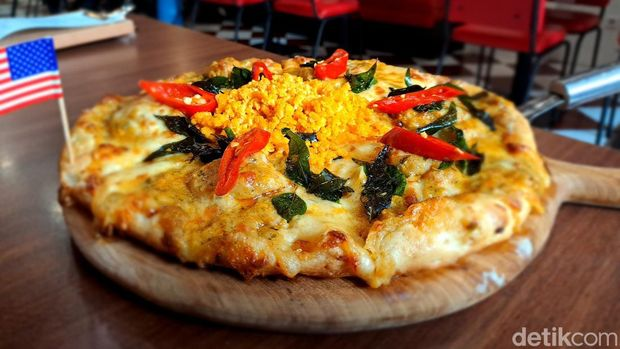
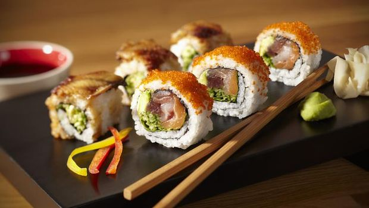
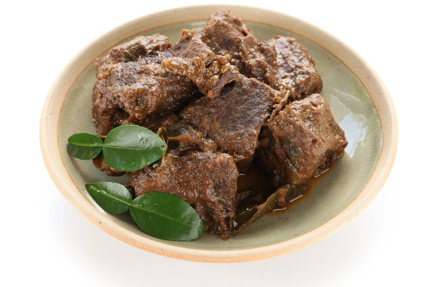
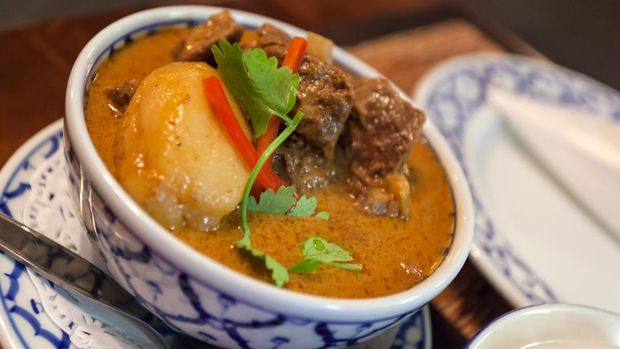
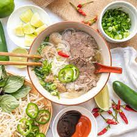

Pizza adalah makanan klasik Italia yang terdiri dari adonan pizza dengan topping tomat, mozzarella, dan daun basil segar.
Kombinasi rasa yang sederhana namun sempurna membuatnya menjadi makanan terenak di dunia.
kelezatan pizza sendiri terletak pada kesederhanaan dan kualitas bahan-bahannya.
Tomat segar, mozzarella lezat, dan aroma daun basil yang harum menyatu menjadi kombinasi yang tak terlupakan.
Sebab inilah, pizza masuk dalam salah satu daftar makanan terenak di dunia.

Sushi adalah hidangan Jepang yang terdiri dari nasi yang dibentuk menjadi gumpalan kecil dengan topping seperti ikan segar, udang, atau sayuran.
Kombinasi antara rasa, tekstur, dan tampilannya yang indah membuat sushi menjadi favorit banyak orang di seluruh dunia.
Keunikan sushi terletak pada kesempurnaan dan ketelatenan dalam memilih bahan-bahan segar serta keahlian dalam mengolah dan menyajikannya.
Sajian satu ini menjadi semakin lezat jika disajikan dengan wasabi, acar jahe, dan kecap asin.

Rendang adalah hidangan daging asal Indonesia yang dimasak dalam bumbu rempah-rempah kaya selama berjam-jam.
Hasilnya adalah daging yang empuk dan bumbu yang kaya, memberikan rasa yang lezat dan aroma yang menggugah selera.
Cita rasanya yang lezat dan kaya akan rempah membuatnya masuk dalam salah satu makanan terenak di dunia.
Tak heran jika banyak turis yang penasaran dengan makanan khas Indonesia yang satu ini.

Massaman curry adalah hidangan kari khas Thailand yang menggabungkan rasa manis, asam, dan pedas.
Daging, kentang, dan kacang-kacangan dalam kuah kari kaya ini menjadikannya makanan yang sangat lezat.
Keunikan massaman curry terletak pada perpaduan unik antara rempah-rempah,
seperti kayu manis dan jintan, yang dipadukan dengan kelezatan daging dan kacang-kacangan.
Rasanya yang kaya, gurih, dan sedikit manis membuatnya menjadi makanan terlezat.
Siapa yang tak tahu dengan hamburger? Hamburger menjadi makanan cepat saji yang sangat populer di seluruh dunia.
Daging giling yang dipanggang, roti burger, dan berbagai macam topping
seperti keju, selada, dan saus tomat menciptakan kombinasi rasa yang lezat.

Tidak hanya di Thailand, Tom Yam juga menjadi makanan favorite di kalangan masyarakat seluruh dunia.
Ini membuatnya menjadi banyak versi di setiap negara.
Tom Yam adalah sup pedas khas Thailand yang terbuat dari campuran bumbu
seperti serai, daun jeruk, jahe, dan cabai. Sup ini biasanya disajikan dengan udang atau ayam
dan memiliki rasa segar, pedas, dan asam yang memikat.
Croissant adalah roti lezat yang berasal dari Prancis. Roti yang renyah di luar dan lembut di dalam ini sering disantap sebagai sarapan atau camilan.
Rasanya yang lezat dan teksturnya yang sempurna menjadikannya favorit banyak orang di seluruh dunia.
Saat ini, croissant juga menjadi salah satu roti favorit masyarakat Indonesia yang sering dijadikan sebagai camilan.

Dim Sum adalah hidangan Cina yang terdiri dari berbagai macam makanan kecil yang disajikan dalam keranjang bambu.
Dim Sum mencakup sejumlah hidangan seperti siomay, pangsit, dan bakpao dengan berbagai isian.
Dengan berbagai pilihan isian dan teknik memasak yang berbeda, setiap hidangan memiliki karakteristik uniknya sendiri.
Rasanya yang lezat dan variasi yang beragam membuat Dim Sum menjadi hidangan yang sangat populer di seluruh dunia.

Pho adalah sup mie khas Vietnam yang terdiri dari mie beras, daging sapi rebus, dan kaldu yang kaya rempah-rempah.
Sup ini sering disajikan dengan aneka tambahan seperti kacang kedelai, mint, dan perasan jeruk nipis,
memberikan rasa yang segar dan lezat.

Peking Duck adalah hidangan khas China yang terdiri dari daging bebek yang dipanggang dengan kulit yang renyah,
kemudian disajikan dengan pancake, daun bawang, mentimun, dan saus hoisin.
Proses persiapan dan pemanggangan yang memakan waktu membuat daging bebek menjadi lezat dan kulitnya menjadi renyah.
Rasanya yang gurih, manis, dan renyah menjadikannya sebagai hidangan yang sangat terkenal dan favorit para turis.